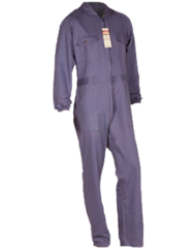

Indumentaria

Pantalon Cargo
- 7 bolsillos en total. Dos delanteros superiores. Un bolsillo portacelular y dos laterales con doble fuelle con tapa y velcro, 2 bolsillos traseros internos con tapa y velcro con etiqueta marcaria Explora.
- Cierre de PVC de alto impacto YKK.
- Atraques de seguridad en puntos de exigencia.
- Cintura reforzada con cuatro costuras.
- Pasacintos amplios, refuerzos en rodilla en unión de traseros.
- Triple costura en unión de laterales, entrepierna y fundillo.
- TELA: Algodón 100 %, sarga 8 Oz.
- USO: Urbano y tiempo libre..
- TALLES: Del 38 al 60

Bombacha de campo
- Dos bolsillos traseros de doble vivo profundos con etiqueta marcaria Explora.
- Bolsillo delantero superior derecho superpuesto multiuso.
- Cintura reforzada con cuatro costuras.
- Pasacintos amplios.
- Cierre de PVC de alto impacto YKK.
- Presilla de ajuste de dos posiciones en la cintura.
- Triple costura en unión de laterales, entrepierna y fundillo.
- Atraque de seguridad en puntos de exigencia.
- Tiro medio, cómodo y práctico.
- Forrería en la misma tela principal.
- TELA: Algodón 100 %, sarga 8 Oz.
- USO: Urbano y tiempo libre..
- TALLES: Del 38 al 62

Bermuda
- Tiene 6 bolsillos en total, 2 delanteros superiores, 2 laterales con doble fuelle con tapa y velcro, 2 traseros internos con tapa y velcro, con etiqueta marcaria Explora.
- Atraques de seguridad en puntos de exigencia.
- Cintura reforzada con cuatro costuras.
- Pasacintos amplios.
- Forrería en la misma tela principal.
- TELA: Algodón 100 %, sarga 6 Oz.
- USO: Urbano y tiempo libre.
- TALLES: Del 40 al 60

Camisa
- Mangas largas, 2 bolsillos de pecho con fuelle, tapa y abertura portalápiz sobre el lado izquierdo.
- Atraques de seguridad en puntos de exigencia.
- Entretela en cuello y puños.
- TELA: Algodón 100 %, sarga 6 Oz.
- USO: Trabajo uso intensivo.
- TALLES: Del 38 al 54

Cotizar
Mameluco
- 2 bolsillos superiores delanteros con fuelle y tapa con botones de metal marcarios Explora.
- Abertura portalápiz sobre el bolsillo izquierd.
- 2 bolsillos delanteros inferiores de gran amplitud con refuerzo interna de la misma tela.
- Cierre doble deslizador de PVC de alto impacto YKK.
- Bolsillo trasero sin tapa con refuerzo de la misma tela.
- Bolsillo metro.
- Atraques de seguridad en puntos de exigencia.
- Puños elastizados.
- Cintura elatizada con pasacintos.
- TELA: Algodón 100 %, sarga 8 Oz.
- USO: Trabajo uso intensivo.
- TALLES: 46-8, 50-2, 54-6, 58-0, 62-4, 66-8